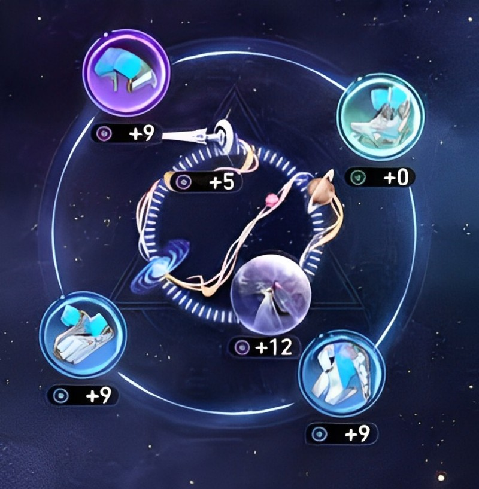
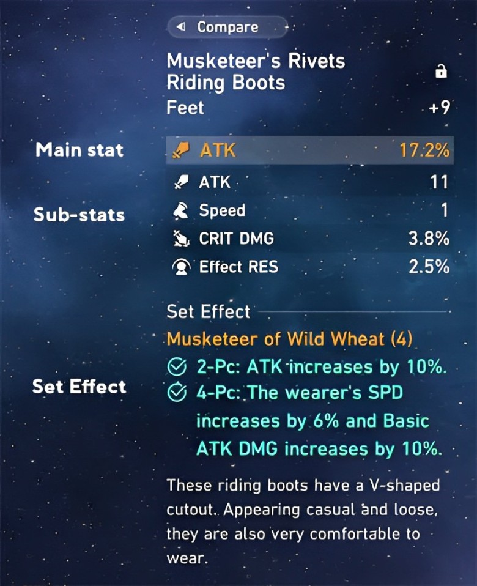

รีลิกส์ และ จักรวาลประดับ
รีลิกส์(Relic) และจักรวาลประดับ(Planar Ornaments) คืออุปกรณ์ส่วมใส่ของตัวละครโดยสามารถใส่รีลิกส์ได้ 4 ชิ้น และจักรวาลประดับ 2 ชิ้น โดยจะสามารถเพิ่มค่า Stat ต่างๆ ของตัวละครได้เพื่อพัฒนาตัวละครให้แข็งแกร่งขึ้น
Stat
โดย Stat ที่สามารถเพิ่มได้จากรีลิกส์และจักรวาลประดับจะเพิ่มขึ้นตาม Level ของชิ้นนั้นๆ จะแบ่งเป็น 3 ส่วนคือ Main stat, Sub-stat, เอฟเฟคเซ็ต
1.Main stat
คือ Stat หลักที่จะเพิ่มขึ้นอย่างตายตัวในทุกๆ Level ของรีลิกส์และจักรวาลประดับ โดยนี่คือตารางของค่า Main stat พื้นฐาน - สูงสุดของรีลิกส์และจักรวาลประดับในระดับต่างๆ
| Stat | 3★ Relic | 4★ Relic | 5★ Relic |
|---|---|---|---|
| HP | 67 - 281 | 90 - 468 | 112 - 705 |
| ATK | 33 - 140 | 45 - 234 | 56 - 352 |
| HP% | 4.1% - 17.2% | 5.5% - 28.7% | 6.9% - 43.2% |
| ATK% | 4.1% - 17.2% | 5.5% - 28.7% | 6.9% - 43.2% |
| DEF% | 5.1% - 21.5% | 6.9% - 35.9% | 8.6% - 54% |
| อัตราคริ | 3.1% - 12.9% | 4.1% - 21.5% | 5.1% - 32.4% |
| ดาเมจคริ | 6.2% - 25.8% | 8.2% - 43.1% | 10.3% - 64.8% |
| ปริมาณการรักษา | 3.3% - 13.7% | 4.4% - 23% | 5.5% - 34.5% |
| อัตราสร้างสถานะ | 4.1% - 17.2% | 5.5% - 28.7% | 6.9% - 43.2% |
| ความเร็ว | 2 - 11 | 3 - 16 | 4 - 25 |
| Bonus DMG* | 3.7% - 15.4% | 4.9% - 25.8% | 6.2% - 38.8% |
| ต้านทานสถานะ | 2.0% - 2.3% - 2.5% | 2.7% - 3.1% - 3.4% | 3.4% - 3.8% - 4.3% |
| เอฟเฟคทำลายล้าง | 6.2% - 25.2% | 8.2% - 43.1% | 10.3% - 64.8% |
| ฟื้นฟูพลังงาน | 1.8% - 7.7% | 2.4% - 12.9% | 3.1% - 19.4% |
*Bonus DMG จะเป็นการเพิ่มความเสียหายของธาตุที่ระบุ เช่น Physical DMG, Fire DMG, Ice DMG เป็นต้น
2.Sub-stat
คือ Stat รองที่จะสุ่มอัพเกรดในทุกๆ 3 Level ในรีลิกส์และจักรวาลประดับ 1 ชิ้นจะมี Sub-stat 3-4 ตัวไม่ซ้ำกันและ Sub-stat จะไม่ซ้ำกับ Main stat และโดยนี่คือตารางของค่า Sub-stat พื้นฐานของรีลิกส์และจักรวาลประดับในระดับต่างๆ
| Stat | 3★ Relic | 4★ Relic | 5★ Relic |
|---|---|---|---|
| HP | 20 - 23 - 25 | 27 - 30 - 33 | 33 - 38 - 42 |
| HP% | 2.0% - 2.3% - 2.5% | 2.7% - 3.1% - 3.4% | 3.4% - 3.8% - 4.4% |
| ATK | 10 - 11 - 12 | 13 - 15 - 16 | 16 - 19 - 21 |
| ATK% | 2.0% - 2.3% - 2.5% | 2.7% - 3.1% - 3.4% | 3.4% - 3.8% - 4.4% |
| DEF | 10 - 11 - 12 | 13 - 15 - 16 | 16 - 19 - 21 |
| DEF% | 2.5% - 2.9% - 3.2% | 3.4% - 3.8% - 4.3% | 4.3% - 4.8% - 5.4% |
| อัตราคริ | 1.5% - 1.7% - 1.9% | 2.0% - 2.3% - 2.5% | 2.5% - 2.9% - 3.2% |
| ดาเมจคริ | 3.1% - 3.5% - 3.8% | 4.1% - 4.6% - 5.1% | 5.1% - 5.8% - 6.5% |
| อัตราสร้างสถานะ | 2.0% - 2.3% - 2.5% | 2.7% - 3.1% - 3.4% | 3.4% - 3.8% - 4.3% |
| ต้านทานสถานะ | 2.0% - 2.3% - 2.5% | 2.7% - 3.1% - 3.4% | 3.4% - 3.8% - 4.3% |
| เอฟเฟคทำลายล้าง | 3.1% - 3.5% - 3.8% | 4.1% - 4.6% - 5.1% | 5.1% - 5.8% - 6.5% |
| ความเร็ว | 1 | 1.6 - 1.8 - 2 | 2 - 2.3 - 2.6 |
3.เอฟเฟคเซ็ต
คือความสามารถเมื่อสวมใส่รีลิกส์หรือจักรวาลประดับครบ 2 หรือ 4 ชิ้นโดยรีลิกส์และจักรวาลประดับแต่ละเซ็ตจะมีเอฟเฟคที่แตกต่างกันดังต่อไปนี้
Relics
| ภาพ | ชื่อ | เอฟเฟคระดับ 2 ชิ้น | เอฟเฟคระดับ 4 ชิ้น |
|---|
Planar Ornaments
| ภาพ | ชื่อ | เอฟเฟคระดับ 2 ชิ้น |
|---|